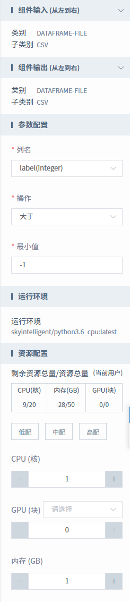

进入画布进行模型预测
数据集介绍
使用的数据集为SCADA，包含的具体字段如下表所示。
字段名 |
字段类型 |
字段描述 |
time_index |
timestamp |
时间。 |
Wind_speed |
double |
风速。 |
Power |
double |
功率。 |
Gearbox_tmp |
double |
齿轮箱。 |
Gearboxshaft_tmp |
double |
变速箱轴。 |
Rotor_speed |
double |
旋转速度。 |
Gen_speed |
double |
|
Wind_angle |
double |
风角。 |
Pit_angle |
double |
坑角。 |
label |
integer |
标签。 |
Gen_torque |
double |
发电机扭矩。 |
scatter_point |
integer |
散射点。 |
can_fully_generate |
integer |
|
label_No.2 |
double |
标签号2。 |
数据处理流程
模型预测的数据处理流程大致如下。
- 属性的值和属性的名称应该具有实际的意义
- 去除属性中相关度高的属性
- 去除对结果影响不大的属性
- 合理选择关联字段
整体实验流程
数据预处理
数据预处理也叫作数据清洗，主要在数据进入算法流程前对数据进行去噪、缺失值填充、类型变换等操作。本次实验的输入数据包括14个特征列。需要解决的问题是删除不需要要的列以及对相关数据进行过滤。
本次实验的数据如下图所示。
数据预处理通过列删除和数据过滤来实现，目的是删除多余的列并对相关的数据过进行按条件过滤。
列删除和数据过滤组件的相关参数配置分别如下图所示。
图 1: 列删除组件参数配置 图 2: 数据处理组件参数配置 数据预处理输出预览如下图所示。
机器学习/深度学习
本文介绍随机森林如何来实现分类，并用来预测结果。随机森林是指利用多棵决策树对样本进行训练并预测的一种算法。也就是说随机森林算法是一个包含多个决策树的算法，其输出的类别是由个别决策树输出的类别的众树来决定的。
每棵决策树都是一个分类器，那么对于一个输入样本，N棵树会有N个分类结果。而随机森林集成了所有的分类投票结果，将投票次数最多的类别指定为最终的输出，这就是一种最简单的 Bagging 思想。
随机森林分类组件的参数配置如下图所示。
随机森林分类的输出图如下。
模型导出